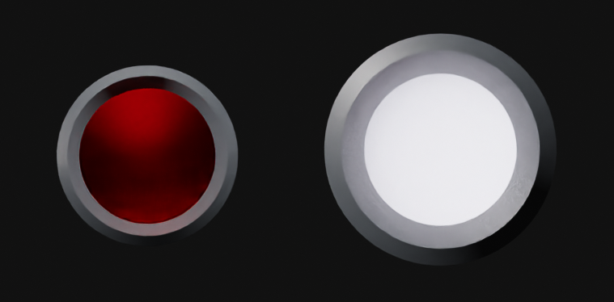
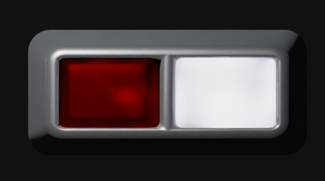
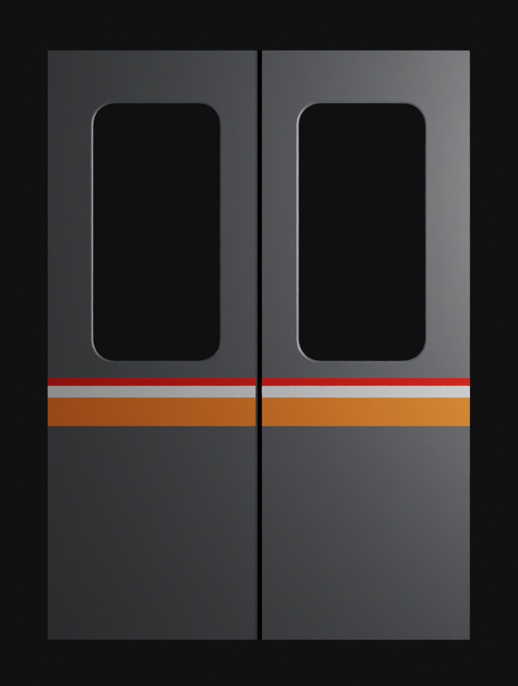

Tōyō Rapid 1000 series
everything i know
since a lot of documentation of the tōyō rapid 1000 series is only in japanese, i decided to compile some knowledge in english.
So, Tōyō Rapid 1000 series was an electric multiple unit, and were in 10-car sets.
They consisted of eight motored cars ("M") and two trailer cars ("T") at the both ends.

As you probably noticed, the car formation is unchanged from Tokyo metro 5000 series,
but the vehicle numbering is. Now, intead of numbers being assigned based on the equipment and order of manufacture,
they were based on the vehicle's coupling position.
Controls
i still have to model them, but they were unchanged from the tokyo metro 5000 series, aside from getting rid of the jr safety devices
Changes from TRTA5000
exterior
- The upper part of the front of the train was covered with a matte black film, while the lower part had its corrugation removed.
Originally separate headlights and taillights  were grouped with each other in rectangular bezels.  - Tōyō Rapid 1000 series recieved new line Colors, reflecting the east-west connection between Chiba and Tokyo:
red for sunrise, white for daytime, and orange for sunset. - The front destination display was changed from Gothic font to Maru Gothic font, with Roman letters included.
- The Control and Brake systems were updated, changing from resistance control to field addition excitation control,
and from dynamic braking to regenerative braking. - Air conditioning was installed, with two static inverters to power them:
- Air Conditioning Units: Mitsubishi Electric CU-764 type integrated dispersed system,
with a cooling capacity of 24.5 kW (21,000 kcal/h), two units per car. - Power Supply: Mitsubishi Electric 190 kVA static inverters (outputting three-phase AC 440V).
Each unit powers the air conditioning for five cars and provides excitation power for the control systems of two cars.
interior
- Old Passenger Doors were replaced by new ones with larger, double-paned glass  and decorative panels on the interior side.
The door pocket windows were removed and replaced with panels, giving them a similar appearance to newly manufactured cars without door pocket windows. - Seat Upholstery was updated to a yellow-green patterned upholstery with a mosaic design inspired by black pine, symbolizing fresh greenery. Priority seats were updated to a light purple color scheme.